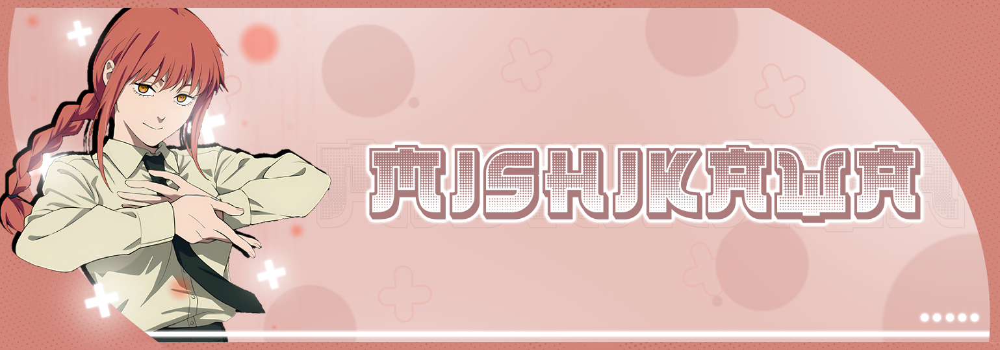
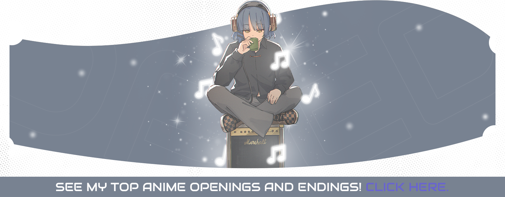

Home
Information
Anime: Yurei Deco
Studios: Science SARU
Genre: Sci-Fi
Song Details
Song: 1,000,000,000,000,000,000,000,000 LOVE
Artist: Clammbon
Resources
MyAnimeList
Vídeo Download
Other Projects

My Anime List Profile
Anime Schedule

Return To Home Page
Mishikawa™